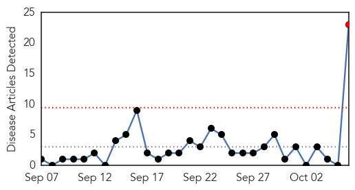
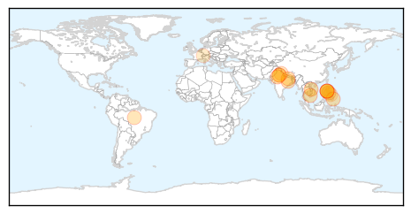

Hepatitis
30-Day Web Trend
1 alerts, 0 warnings

30-Day Twitter Trend
0 alerts, 0 warnings

Article Locations

Article Confidences

Top Articles:
- 0.930
- 22 patients diagnosed with Hepatitis C virus, four died: SGH
- 0.909
- Hepatitis C cluster at SGH: What you need to know
- 0.909
- Hepatitis C cluster at SGH: What you need to know
- 0.903
- Four renal patients die in Singapore hospital from hepatitis C
- 0.898
- Almost 70 patients tested for HIV and hepatitis after nurse is caught re-using a syringe while giving flu shots at New Jersey clinic
- 0.889
- 4 renal patients die in Singapore hospital from hepatitis C
- 0.880
- 22 patients infected in SGH Hepatitis C outbreak; 4 have died, Healthcare in singapore news, Health News, AsiaOne YourHealth
- 0.868
- Nurse Reused Syringe While Giving Flu Shots to Patients at NJ
- 0.867
- 21 patients at SGH hit by hepatitis C; MOH orders probe, Health News & Top Stories
- 0.857
- 4 deaths at renal ward could be linked to Hepatitis C: SGH
- 0.854
- 22 patients in SGH renal ward infected with hepatitis C; 4 patients have died, Health News & Top Stories
- 0.854
- 22 patients in SGH renal ward infected with hepatitis C; 4 patients have died, Health News & Top Stories
- 0.848
- Hospital apologises for four deaths and 22 infections in hep C outbreak
- 0.815
- 22 infected with Hepatitis C in S’pore, 4 deaths linked to virus – BorneoPost Online
- 0.755
- Nurse Reportedly Reuses Flu Shot Syringe At New Jersey Clinic
- 0.718
- Singapore hospital apologises for hepatitis C outbreak that killed 4
- 0.703
- Doctors in shock over news of hepatitis C outbreak at SGH
- 0.620
- Health officials investigate HIV in Shelby County
- 0.620
- Health officials investigate HIV in Shelby County
- 0.591
- SGH #HepC infections: Initial probe indicates source might be IV injectable agents: SGH CEO htt…
- 0.581
- SGH to take responsibility, pay for treatment needed by infected patients
- 0.554
- Understanding HCV disease progression rates among PWID
- 0.543
- HIV+ inmate claims he shared needles, had sex with 45 people
Top Tweets:
-
No tweets found for Oct 06, 2015
Dengue Fever
30-Day Web Trend
19 alerts, 7 warnings

30-Day Twitter Trend
3 alerts, 0 warnings

Article Locations
Article Confidences

Top Articles:
- 0.997
- After Delhi, Rajasthan worst affected. Number of dengue cases reach 1931
- 0.996
- Dengue fever spreads throughout Vietnam, claiming 28 lives
- 0.991
- Dengue, malaria cases rise in Rajasthan, separate OPDs set up
- 0.986
- DOH: Rise of dengue cases not epidemic
- 0.981
- El Nino Linked to Dengue Epidemic Shows New University of Pittsburgh…
- 0.970
- Dengue cases nearing 100,000 mark – DOH
- 0.962
- Vietnam dengue outbreak grows, pushes hospitals to the limit
- 0.946
- 92,000 dengue cases in 9 months
- 0.943
- Pvt hosps lax in sharing dengue data
- 0.915
- Weather ailments go viral
- 0.871
- SurSur IPHO keeps close watch on dengue
- 0.829
- São Paulo Takes Drastic Step to Prevent Dengue Outbreak
- 0.798
- With 570 cases, Ludhiana battles to fight dengue
- 0.780
- Senator Nancy wants Senate Inquiry on Dengue
- 0.725
- Health Min for developing mechanism to ascertain dengue data
- 0.663
- MMDA chief urges LGUs to intensify anti-dengue ops
- 0.643
- Travel history aids in pediatric illness diagnoses at ED
- 0.572
- Cebu News, The Freeman Sections, The Freeman
Top Tweets:
- 0.725
- Flavivirus news: Amid dengue crisis, Delhi govt prepares for swine flu - Daily News & Analysis:... http://t.co/RMlCQ0vE1U pathogenposse